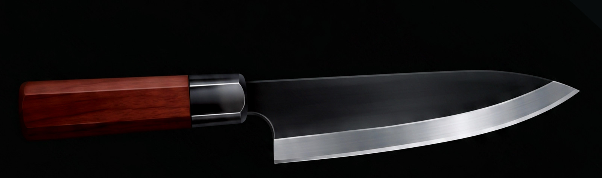

8:18
Current edge

No photo
21°
per side
42° included
Last sharpened · Today, 22 Oct 2026
Finished on a 3k stone, stropped once on leather.
Sharpening History
3 sessionsPast range 17.5°–21° per side